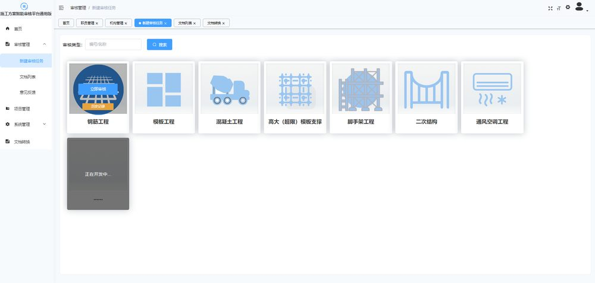
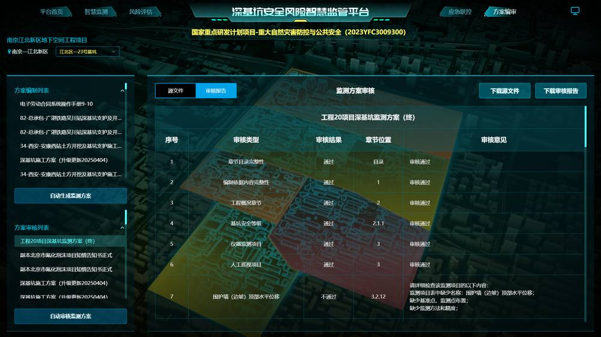
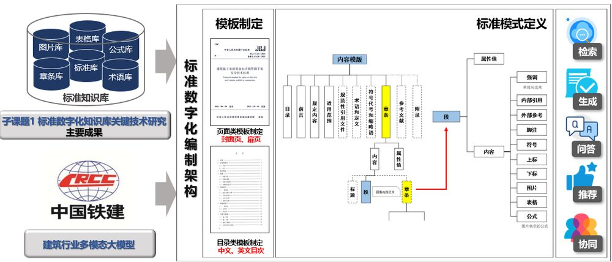
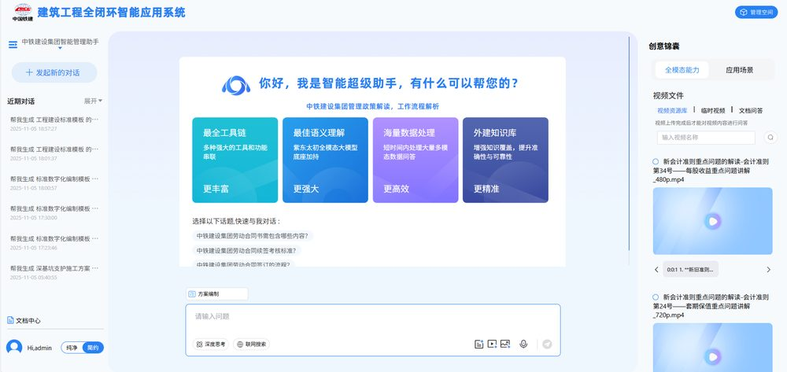

20 项专利申请受理
含发明专利 17 项、已授权 3 项，集中于施工方案智能审核、文本生成与知识图谱方向。
含发明专利 17 项、已授权 3 项，集中于施工方案智能审核、文本生成与知识图谱方向。
覆盖方案智能编制、关键要素解析、多模态对话、形变监测与质量大数据管理等系统。
含《图学学报》核心论文《基于 YOLO 和自然语言处理的施工方案智能审核方法》及集团内网论文 1 篇。
智能审核平台已接入集团施工技术文件管理系统，面向内部与外部用户完成各类施工方案的线上编审。
围绕建筑高危工程施工方案智能审核与专家知识治理方向深造，推进多模态知识治理核心技术研究与工程落地。
参与南昌大学与中国科学院联合培养项目：构建智库专家推荐系统，设计专家多维评分模型，完成数据清洗去噪、知识图谱构建与专家向量训练，基于知识图谱嵌入方法实现专家推荐。连续三年获研究生一等学业奖学金。
打下软件工程与计算机基础，大学英语 CET-6（485 分），具备阅读人工智能与智能建造领域英文文献的能力。
从技术预研、算法攻关到平台工程化落地的代表性工作

针对施工技术文档审核数字化程度低、经验依赖强、重复劳动多的问题，汇聚行业专家审核经验知识， 研发“规则 + 语义”双通道审核引擎，突破传统制式审核模式，实现文本编写质量评价、语义相似性判别、 图表文字识别、计算书参数再审核等功能，审核类型对齐住建部危险性较大分部分项工程专项方案严重缺陷清单。

基于文档解析、知识抽取与知识图谱技术，自动提取支护设计文件中的施工语义知识，驱动监测方案生成， 实现高置信度、可追溯的深基坑监测方案自动输出；监测方案自动编制与智能审核模块已集成至平台大屏监控端与后台管理端，形成编审业务全流程闭环。

以数字化、碎片化的标准知识库为核心，综合运用标准模式定义、建筑行业多模态大模型、智能审核、智能推荐与搜索等技术， 支撑标准结构化编制、智能化生成填写、格式自动校验、多人协同编制与意见反馈，以及标准知识的自动推荐、智能查询与关联引用。

围绕建筑施工海量专业知识与多模态异构数据，建设行业多模态专家咨询系统，提供技术问答、规范智能推荐检索、 施工方案智能审核与编制、多模态内容生成等应用；完成多模态多任务关联建模与统一表征、多任务指令微调、分布式训练与大模型压缩等技术攻关。
欢迎在智能建造、人工智能应用与建筑知识治理方向开展交流合作。
社会责任与工程价值
服务高危工程安全管控
围绕城市复杂地质条件深基坑、高危施工方案等场景开展智能审核与监测研究， 用数字化手段辅助识别施工风险，支撑工程质量与人员安全。
推动行业知识数字化治理
参与建筑工程标准数字化共性关键技术研究，推动规范标准、施工经验与工程数据 沉淀为可复用的知识库，助力行业技术经验传承。
践行科技向善、技术为人
在工程智能化研究中坚持求真务实、科研诚信，关注 AI 技术的可信、可用与公平， 让技术真正服务一线工程人员，降低重复劳动、提升决策质量。